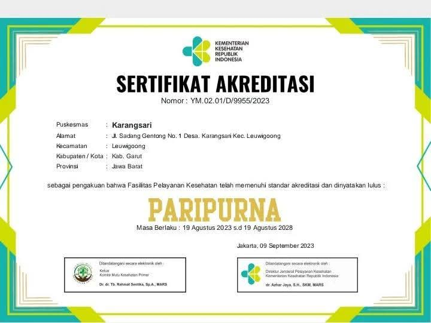

Puskesmas Karangsari hadir untuk memberikan pelayanan kesehatan terbaik, terpercaya, dan profesional bagi seluruh masyarakat Garut dan sekitarnya.
Puskesmas Karangsari siap melayani kesehatan masyarakat dengan fasilitas lengkap dan 9 layanan utama medis terpercaya.
Registrasi pasien cepat, ramah, dan terstruktur baik secara langsung maupun pendaftaran online.
Pemeriksaan kesehatan menyeluruh, konsultasi medis, diagnosis, dan terapi pengobatan dasar.
Pemeriksaan, penambalan, pencabutan gigi, serta pembersihan karang gigi oleh dokter gigi ahli.
Pemeriksaan kehamilan rutin, kesehatan pascamelahirkan, serta konsultasi dan pelayanan KB.
Penanganan balita sakit secara komprehensif, pemantauan gizi, serta penanganan infeksi anak.
Pemberian vaksinasi dan imunisasi dasar lengkap bagi bayi dan anak-anak secara teratur.
Pemeriksaan kesehatan anak sekolah serta deteksi dini Penyakit Tidak Menular (hipertensi, diabetes).
Pendampingan langsung ke rumah pasien untuk pemantauan gizi, ibu hamil, TBC, dan BBLR (Bayi Berat Lahir Rendah).
Penyediaan resep obat lengkap, terjamin keasliannya, aman, serta edukasi konsumsi obat oleh apoteker.
Puskesmas Karangsari siap melayani masyarakat dengan jam buka teratur untuk semua instalasi dan poli kesehatan.
Pertolongan darurat medis 7 hari seminggu.
Senin – Sabtu (Minggu Tutup).
Sesuai jadwal dokter praktik.
Jelajahi setiap ruang perawatan, fasilitas pendaftaran, poli spesialis, dan area layanan kami secara interaktif melalui tur digital 360 derajat.
Dipercaya dan telah tersertifikasi secara nasional

Nomor: YM.02.01/D/9955/2023 | Masa Berlaku: 19 Agustus 2023 s.d 19 Agustus 2028
Diberikan oleh Kementerian Kesehatan Republik Indonesia sebagai pengakuan bahwa Puskesmas Karangsari telah memenuhi standar akreditasi dan dinyatakan lulus PARIPURNA.
Puskesmas Karangsari merupakan fasilitas kesehatan tingkat pertama (FKTP) terpercaya di Kabupaten Garut dengan fasilitas dan ruangan lengkap seperti Ruang Pendaftaran, Ruang Tunggu, Ruang Pemeriksaan Umum, Poli Gigi, Poli KIA, Ruang Tindakan, dan Apotek.
Untuk mempermudah masyarakat dalam memperoleh gambaran tata letak dan fasilitas puskesmas secara fleksibel, tersedia media informasi Virtual Tour berbasis web dengan panorama 360° yang dapat diakses secara interaktif dari mana saja.
Ikuti Kami di Media Sosial
Dapatkan informasi dan konten terbaru dari kami.